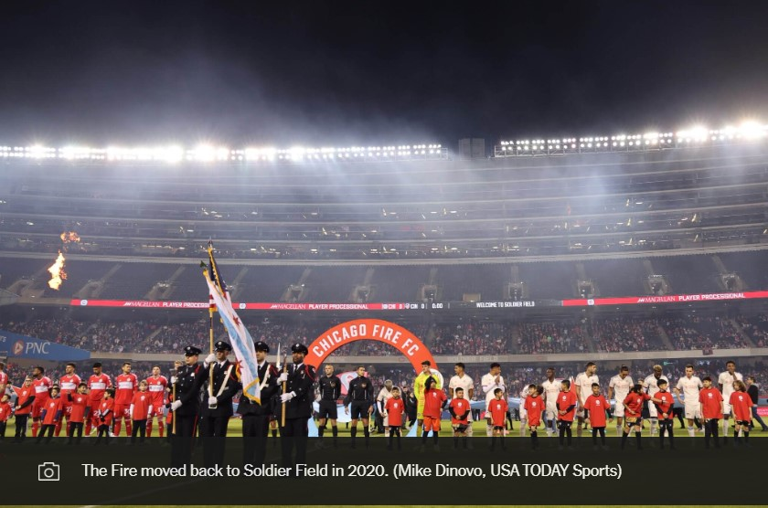

Chicago Fire owner is considering building privately-funded, soccer-specific stadium in the city
Chicago Fire owner Joe Mansueto said the team is considering building a soccer-specific stadium in Chicago, calling it the “last piece of the puzzle with this club.” On Thursday, Mansueto said the club, which currently plays at Soldier Field, has started to tour potential sites in the city.
After buying 100 percent of the Fire in 2019, Mansueto moved the team from a soccer-specific stadium in Bridgeview, Illinois back to Soldier Field, which it shares with the NFL’s Chicago Bears. As a secondary tenant in the Chicago Park District-owned stadium, the Fire loses out on dates for games to both the Bears and concerts held in the venue.
“The warm summer days and fall days are really precious, and we’d love to have as many of those days as possible, but we often get conflicted out with the Bears and concerts,” Mansueto said at the press conference introducing Gregg Berhalter as the team’s new director of football and head coach. “We prefer not to have to play on the bookends when it’s cold in Chicago in the winter, early spring or late in the fall. And so the scheduling is certainly an issue with Soldier Field. Certain sponsorship categories are blocked out, non-gameday access to the pitch is sometimes an issue.”
In an interview with The Athletic after the press conference, Mansueto said the team has toured three sites in Chicago: a lakefront site in the Bronzeville neighborhood that was the former home of the Michael Reese Hospital and Medical Center; The 78, a development in South Loop where the Chicago White Sox have proposed building a new stadium; and Lincoln Yards, a development along the north branch of the Chicago River in the Lincoln Park neighborhood on the north side of the city.
“They all have their pros and cons,” Mansueto said. “We have retained some consultants to do physical feasibility analysis, but now that the Endeavor Health Performance Center is done, we’re turning our attention to the stadium. It’s early going, and I think you’ll see more in the next couple of years on that.”
The Fire is set to open a new training facility in the city, the Endeavor Health Performance Center, this spring. The $100 million privately-funded facility is based on the west side of the city near the Medical District neighborhood, about a mile and a half south of the United Center, home of the NBA’s Chicago Bulls and NHL’s Chicago Blackhawks.
A stadium within the city limits would be a potential game-changer for a club that has struggled to resonate in the sports-rich Chicago market. The third-biggest television market in the United States with a rich soccer history, Chicago has long been considered a sleeping giant in MLS. But the team has struggled over the last decade and a half, making the playoffs just twice since 2009. A move to SeatGeek Stadium in Bridgeview, a suburb 15 miles outside of the city, in 2006, proved to be another barrier to building the fan base. The stadium was difficult to reach via public transportation, and the arrangement with the village limited the financial upside. The Chicago Red Stars in the NWSL still use the facility.
The Fire moved back to Soldier Field just as Mansueto bought controlling interest in the team from previous owner Andrew Hauptman. Mansueto paid $60.5 million to get the Fire out of its lease with the Village of Bridgeview early.
A new venue would likely generate renewed excitement around a team that won the domestic double — MLS Cup and the U.S. Open Cup — in its first year of existence in 1998.
“A smaller venue I think would work well for us and help us connect further with our fan base,” Mansueto said. “I think it would be another element in re-energizing the club.”
The Fire is the third Chicago professional men’s team to announce it’s looking to build a new stadium, joining the Bears and the White Sox. The Bears have turned focus back to the Soldier Field site, while the White Sox plans remain up in the air. The Athletic reported Thursday that owner Jerry Reinsdorf was open to selling the team. One of the major barriers to those projects is that the teams are asking for public funds to build stadiums. The White Sox reportedly asked for more than $1 billion in public funds, according to the Chicago Tribune, while the Bears’ stadium project could cost taxpayers as much as $2.4 billion of the total $4.75 billion cost of the project, according to WTTW.
Mansueto, the founder, CEO and chairman of Morningstar, with a reported net worth of $7.1 billion, said the team would privately finance a new stadium.
“My personal view is that stadiums are not a great investment,” Mansueto said. “They’re big, costly to maintain, sit empty most of the time. And so to the extent that they create value, most of that accrues to the sports team, not the municipality. So to me, it’s fair that the sports team should own it. Moreover, here in Illinois, in the City of Chicago, our finances are strained. Teachers want more money, law enforcement needs money, pension obligations. Our city and state don’t have the funds, to be candid, and so to me, we would privately finance it.”
Chicago Fire Owner Explores Building New Soccer-Specific Stadium
Chicago Fire owner Joe Mansueto announced the club is considering constructing a soccer-specific stadium in Chicago, calling it the "last piece of the puzzle" for the team. Currently playing at Soldier Field, the Fire faces scheduling conflicts with the NFL’s Chicago Bears and concerts, limiting prime game dates and sponsorship opportunities. Mansueto emphasized the need for a venue that avoids cold-weather matches and allows better fan engagement. The team has evaluated three potential city sites: the former Michael Reese Hospital location in Bronzeville, the South Loop’s "The 78" development (also eyed by the White Sox), and Lincoln Yards along the Chicago River.
The Fire’s history has been marked by challenges, including a poorly located suburban stadium in Bridgeview that hindered fan accessibility. Since returning to Soldier Field in 2019, the club has sought a stronger identity in Chicago’s competitive sports market. A new stadium, fully privately financed by Mansueto (unlike the publicly subsidized proposals from the Bears and White Sox), could revitalize the franchise. The move aligns with the upcoming opening of the Fire’s $100 million training facility, signaling a broader effort to elevate the team’s profile and performance in MLS.